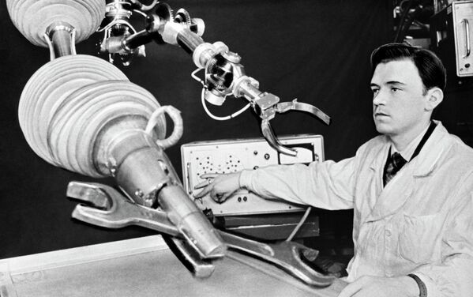
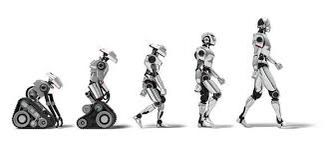
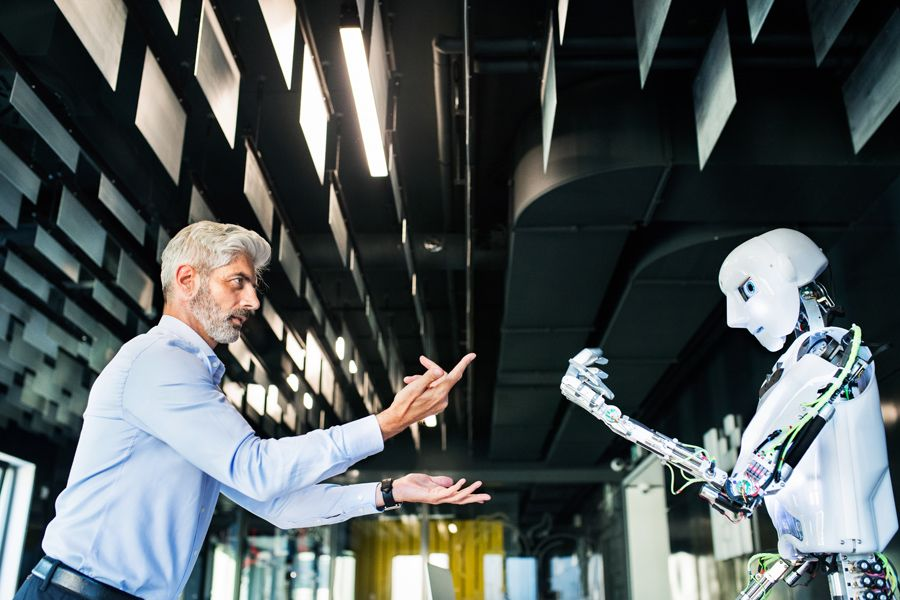

La robótica es una disciplina que abarca diversas áreas del conocimiento, como la ingeniería mecánica, la electrónica, la informática, la inteligencia artificial y la física. Los robots pueden ser diseñados para realizar tareas simples o complejas, dependiendo de su aplicación y complejidad. En la industria, los robots se utilizan en la fabricación de productos en línea de montaje, donde pueden realizar tareas repetitivas y peligrosas con mayor precisión y eficiencia que los trabajadores humanos. También se utilizan en la exploración espacial, donde los robots pueden ser programados para realizar tareas en ambientes hostiles y peligrosos, como la superficie de otros planetas. En el ámbito de la salud, los robots se utilizan en la cirugía y en la rehabilitación de pacientes. En la educación, los robots se utilizan como herramientas de enseñanza para ayudar a los estudiantes a aprender programación y otras habilidades técnicas. La robótica también está presente en la vida diaria, con el desarrollo de robots domésticos que pueden realizar tareas como la limpieza del hogar, el cuidado de los niños y la atención a personas mayores o con discapacidades. Sin embargo, el desarrollo de la robótica también plantea desafíos y preocupaciones, como la pérdida de empleo debido a la automatización, la privacidad y la seguridad en la recolección y almacenamiento de datos, y la ética en el uso de robots para fines militares o en situaciones en las que pueden poner en peligro a las personas.
 La robótica va unida a la construcción de "artefactos" que trataban de materializar el deseo humano de crear seres a su semejanza y que al mismo tiempo lo descargasen de trabajos tediosos o peligrosos. El ingeniero español Leonardo Torres Quevedo (que construyó el primer mando a distancia para su automóvil mediante telegrafía, el ajedrecista automático, el primer transbordador aéreo y otros muchos ingenios), acuñó el término "automática" en relación con la teoría de la automatización de tareas tradicionalmente asociadas. Karel Čapek, un escritor checo, acuñó en 1920 el término "robot" en su obra dramática Rossum's Universal Robots / R.U.R., a partir de la palabra checa robota, que significa servidumbre o trabajo forzado. El término robótica es acuñado por Isaac Asimov, definiendo a la ciencia que estudia a los robots. Asimov creó también las tres leyes de la robótica. En la ciencia ficción se ha imaginado a los robots visitando nuevos mundos, haciéndose con el poder o, simplemente, aliviando de las labores caseras. Los robots se utilizan ampliamente en la fabricación, ensamblaje, empaque y embalaje, minería, transporte, exploración espacial, cirugía, armamento, investigación de laboratorio, seguridad y la producción en masa de consumidor y bienes industriales.
 La robótica ha evolucionado significativamente en las últimas décadas, pasando de ser una disciplina emergente a ser una industria en crecimiento en todo el mundo. A continuación, se presentan algunos de los hitos más importantes en la evolución de la robótica: Década de 1950: Se desarrollan los primeros robots industriales, diseñados para realizar tareas repetitivas y peligrosas en la fabricación de productos. Década de 1960: Se introduce el primer robot controlado por computadora, lo que permite una mayor precisión y flexibilidad en la programación de los robots. Década de 1970: Se desarrolla la tecnología de visión artificial, que permite a los robots detectar y responder a su entorno. Década de 1980: Se crean los primeros robots móviles, capaces de moverse y navegar de manera autónoma. Década de 1990: Se desarrollan robots humanoides, que pueden imitar los movimientos y comportamientos humanos. Década de 2000: Se introduce la tecnología de sensores táctiles y hápticos, que permiten a los robots sentir y responder al contacto físico. Década de 2010: Se produce una mayor integración entre la robótica y la inteligencia artificial, lo que permite a los robots aprender y adaptarse a situaciones nuevas y cambiantes. En la actualidad, la robótica sigue evolucionando a un ritmo acelerado, gracias a la mejora continua de la tecnología y a la creciente demanda de robots en una amplia variedad de industrias y aplicaciones. La robótica se espera que tenga un papel cada vez más importante en la automatización de procesos, la mejora de la eficiencia y la seguridad en el trabajo, y el avance de la ciencia y la tecnología en general.
 En la actualidad, la robótica es una de las áreas de la tecnología que más rápido está avanzando, y su impacto se está extendiendo a una amplia variedad de sectores. Aquí hay algunos ejemplos de cómo la robótica está siendo utilizada en la actualidad: Industria manufacturera: La robótica sigue siendo una parte importante de la fabricación industrial, y se utilizan cada vez más robots colaborativos (cobots) que trabajan junto con los operadores humanos para aumentar la eficiencia y la seguridad en la línea de producción. Logística y transporte: Los robots móviles están siendo utilizados para automatizar el transporte de bienes en almacenes y centros de distribución, y se están desarrollando drones y vehículos autónomos para entregas en la última milla. Medicina: Los robots se utilizan en la cirugía y en la rehabilitación de pacientes, y se están desarrollando robots sanitarios para tareas como la limpieza hospitalaria y el suministro de medicamentos. Agricultura: Los robots están siendo desarrollados para tareas como la siembra, la cosecha y el mantenimiento de cultivos. Espacio: Los robots se utilizan en la exploración espacial para tareas como la recolección de muestras y la reparación de satélites. Hogar y entretenimiento: La robótica doméstica está creciendo en popularidad, con robots que pueden realizar tareas como la limpieza, el cuidado de niños y mascotas y la seguridad del hogar. También hay robots de entretenimiento, como los juguetes robóticos y los robots de compañía. Además, se están realizando investigaciones en áreas como la robótica social, que se centra en el desarrollo de robots capaces de interactuar con los humanos de manera más natural y efectiva, y la robótica cognitiva, que se enfoca en la construcción de robots que puedan aprender y razonar de manera similar a los seres humanos. En general, la robótica sigue siendo un área en evolución constante, con nuevas aplicaciones y desarrollos tecnológicos emergentes todo el tiempo.